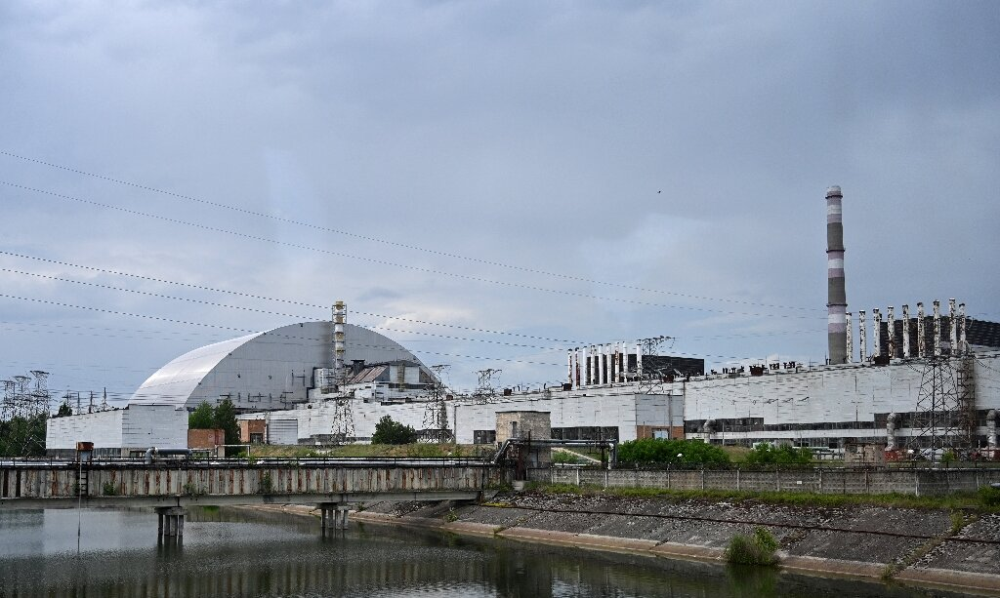

|
|

Чорно́бильська катастро́фа — техногенна екологічно-гуманітарна катастрофа,
спричинена двома тепловими вибухами і подальшим руйнуванням четвертого енергоблоку Чорнобильської атомної електростанції,
розташованої на території України (колишньої УРСР), в ніч на 26 квітня 1986 року.
Руйнування мало вибуховий характер, реактор було повністю зруйновано і в довкілля
було викинуто велику кількість радіоактивних речовин. Відбувся викид потужністю 300 Хіросім.
На думку багатьох, ця подія та офіційна реакція на неї, що була продемонстрована Москвою,
стала однією з причин розпаду СРСР.
Катастрофа вважається найбільшою за всю історію ядерної енергетики
як за кількістю загиблих і потерпілих від її наслідків людей, так і за економічним збитком.
Радіоактивна хмара від аварії пройшла над європейською частиною СРСР,
більшою частиною Європи, східною частиною США.
Приблизно 60 % радіоактивних речовин осіло на території Білорусі.
Близько 200 000 осіб було евакуйовано із зон забруднення.
Чорнобильська аварія стала подією великого суспільно-політичного
значення для СРСР і світу.
Це наклало деякий відбиток на хід розслідування її причин.
Підхід до інтерпретації фактів і обставин аварії
змінювався з часом і повністю єдиної думки не існує досі.
Спершу керівництво УРСР та СРСР намагалося приховати масштаби трагедії,
але після повідомлень зі Швеції, де на АЕС Форсмарк було знайдено радіоактивні частинки,
принесені з східної частини СРСР, та оцінки обсягів зараження,
розпочалася евакуація близько 130 000 мешканців Київської області із забруднених районів.
Радіоактивного ураження зазнали близько 600 000 осіб, насамперед ліквідатори катастрофи.
Навколо ЧАЕС створено 30-кілометрову зону відчуження.
|